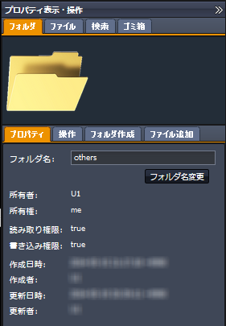
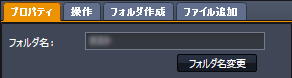
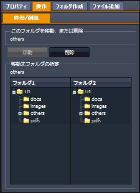
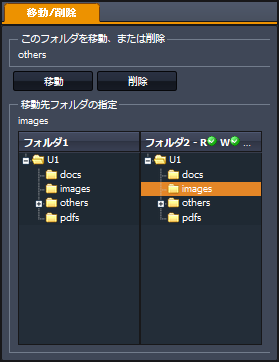
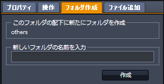
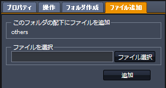
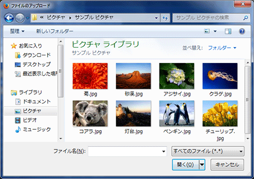
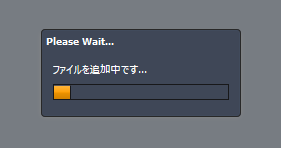

SecretFilesマニュアル
3. SecretFilesサービス(解説編)
3.2 各ペインの説明
3.2.4 右ペイン(プロパティ表示・操作ペイン)
右ペインは初期状態では、右端に隠れた状態になっています。
表示されているタイトルバーの上端にある をクリックして下さい。
表示領域がスライドして、ペインが表示されます。
3.2.4.1 フォルダ
フォルダプロパティで実行できる作業は、フォルダ名の変更、フォルダの作成、ファイルの追加などのほか、フォルダのコピー、移動、削除です。

プロパティ
プロパティタブをクリックすると、該当するフォルダのプロパティ情報が表示されます。表示されているプロパティのうち、フォルダ名は変更することが可能です。
プロパティとして表示する項目は以下の通りです。
| 所有者: |
所有者のユーザ名を表示します。 |
| 所有権: |
所有権が自分にある場合には「me」を、別の利用者にある場合には「other」と表示します。 |
| 読み取り権限: |
このフォルダに読み取り権限がある場合にはtrueを、ない場合にはfalseを表示します。 |
| 書き込み権限: |
このフォルダに書き込み権限がある場合にはtrueを、ない場合にはfalseを表示します。 |
| 作成日時: |
サーバにてフォルダを作成した日時を表示します。
* 最後の+0900の表示は、世界標準時から9時間経過した時間を表示していることを表わしています。 |
| 作成者: |
フォルダを作成した利用者のユーザ名を表示します。 |
| 更新日時: |
フォルダの中で行なわれた変更(サブフォルダやファイルの追加や削除など)の最終日時を表示します。 |
| 更新者: |
上記の作業を行なった利用者のユーザ名を表示します。 |
フォルダ名変更
フォルダ名というラベルの右側のフィールドに任意の文字列を入力してから、「フォルダ名変更」ボタンをクリックして下さい。

操作
操作タブをクリックすると、該当するフォルダのコピーや移動、削除などを可能とするペインが表示されます。
コピー/移動/削除
左ペインのフォルダ1またはフォルダ2あるいは、ファイル全体表示に表示されているフォルダを選択すると、コピー、移動、削除の対象となるフォルダとしてその名前が表示されます。

次に、プロパティペインの下に表示してある「フォルダのコピーまたは移動先」にてコピー、移動先を指定します。
この際、コピー先または移動先のフォルダに対する読み込み権限、書き込み権限、所有権について以下のように表示されます。
フォルダーツリーのタイトルバーに緑色のアイコンが表示されている場合には、それぞれの権限があるか所有権があることを示します。
もし赤色のアイコンが表示されている場合には、それぞれの権限がないか所有権がないことを示します。
コピーおよび移動の処理を行なう際、コピー先、移動先のフォルダに書き込み権限がないと実行することができません。

コピー先あるいは移動先を指定したら、「コピー」「移動」のボタンをクリックします。
コピー、移動を実行した後に、作業後の状態を表示に反映するため、関連するペインのデータをサーバから読み込んで表示します。
削除の場合には、コピー先または移動先の指定は不要です。
削除するフォルダを左ペインまたはファイル全体表示にて選択したら、「削除」ボタンをクリックして下さい。
フォルダ作成
左ペインのフォルダ1またはフォルダ2あるいはファイル全体表示に表示されているフォルダを選択すると、このペインの「このフォルダの配下に新たにフォルダを作成します。」の領域にフォルダ名が表示されます。

新規に作成するフォルダ名を入力して、「作成」ボタンをクリックして下さい。
作成されたフォルダは、該当するフォルダツリーに表示されます。
ファイル追加
左ペインのフォルダ1またはフォルダ2あるいは、ファイル全体表示に表示されているフォルダを選択すると、このペインの「このフォルダの配下に新たにフォルダを作成します。」の領域にフォルダ名が表示されます。

「ファイル選択」ボタンをクリックすると、ファイルのアップロードウィンドウが開きますので、任意のファイルを選択して下さい。

ファイルの選択画面は使用しているコンピュータによって異なります。
(上の図は、Windows7の場合です。)
ファイルのアップロード中は、次のダイアログが表示されています。

アップロードされたファイルは、中央ペイン表示しているアップロード先フォルダのファイルリストに追加されます。